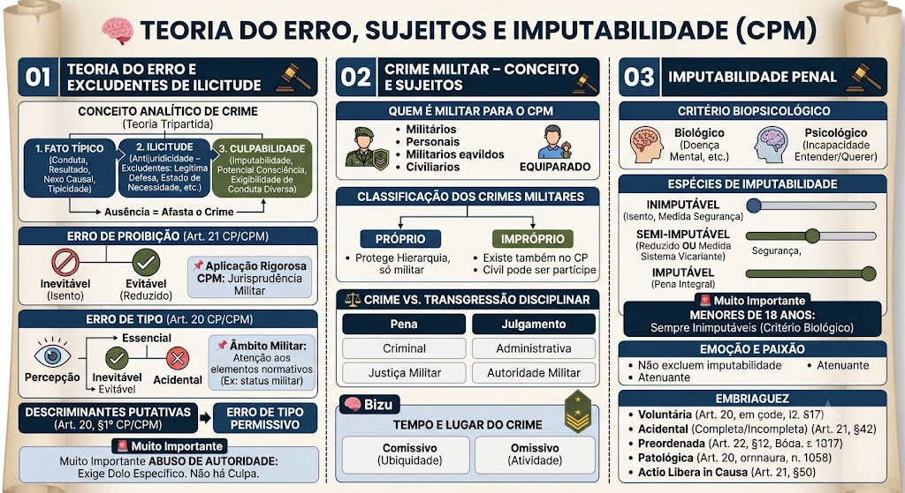

Material de estudo: Teoria do Erro, Sujeitos e Imputabilidade
Material complementar · Ver fonte no GitHub
Teoria do Erro e Excludentes de Ilicitude
Conceito Analítico de Crime (teoria tripartida)
1. Fato típico – conduta (ação ou omissão) que se subsume ao tipo penal, com resultado (quando exigido), nexo causal e tipicidade (formal e material).
2. Ilicitude (antijuridicidade) – conduta contrária ao ordenamento jurídico, ou seja, que não está amparada por uma causa de justificação (legítima defesa, estado de necessidade, estrito cumprimento do dever legal ou exercício regular de direito).
3. Culpabilidade – juízo de reprovação pessoal, que exige:
- Imputabilidade (capacidade de entender e querer);
- Potencial consciência da ilicitude (conhecimento possível da ilicitude do fato);
- Exigibilidade de conduta diversa (possibilidade de agir de acordo com o direito).
A ausência de qualquer um desses elementos afasta o crime, seja por atipicidade, exclusão da ilicitude ou da culpabilidade.
Erro de Proibição (Art. 21 do CP – aplicável)
O agente conhece os fatos, mas acredita que sua conduta é lícita.
Inevitável (escusável): exclui a culpabilidade → isenção de pena.
Evitável (inescusável): reduz a pena de 1/6 a 1/3.
📌 Aplicação no CPM: O art. 12 do CPM autoriza a aplicação subsidiária do CP comum. Contudo, a jurisprudência militar exige rigor na análise da inevitabilidade, especialmente quando o erro decorre de obediência a ordem hierárquica ou de interpretação de regulamentos militares – sendo necessária a comprovação de que o agente não tinha meios razoáveis para conhecer a ilicitude.
Erro de Tipo (Art. 20 do CP – aplicável)
O agente desconhece um elemento do tipo penal (percepção equivocada da realidade).
Essencial inevitável: exclui o dolo e a culpa → fato atípico (absolvição).
Essencial evitável: exclui o dolo, mas permite punição por crime culposo (se previsto).
Acidental: não exclui o crime, mas afasta qualificadora/agravante.
📌 No âmbito militar: a mesma regra é aplicada, com atenção aos elementos normativos do tipo (ex.: conceitos de "serviço", "comandante", "praça") que podem gerar erro de tipo essencial se o agente desconhecer seu status ou sua função no momento da conduta.
Descriminantes Putativas (Art. 20, §1º do CP)
O agente imagina uma situação de fato que, se existisse, tornaria sua ação legítima (ex.: legítima defesa putativa).
Escusável: isento de pena.
Inescusável: afasta o dolo, responde por crime culposo (culpa imprópria).
Erro de Tipo Permissivo
Erro sobre os pressupostos fáticos de uma causa de justificação (ligado às descriminantes putativas).
Abuso de Autoridade
Exige dolo específico (finalidade de prejudicar, beneficiar‑se ou por capricho). Não há modalidade culposa nesse crime.
Crime Militar – Conceito e Sujeitos
Quem é militar para o CPM
Integrantes das Forças Armadas, Polícia Militar e Corpo de Bombeiros Militar (Art. 22 do CPM c/c Art. 42 da CF).
Equiparado (Art. 12): civil que exerce função em organização militar ou comissão militar, enquanto durar essa função.
Classificação dos Crimes Militares
Próprio: só no CPM; protege hierarquia/disciplina (ex.: deserção, motim). Regra: só militar pratica (exceção: insubmissão de civil convocado).
Impróprio: existe também no CP; torna‑se militar pelo contexto (Art. 9º). Civil pode ser coautor/partícipe.
Crime vs. Transgressão Disciplinar
| Crime Militar | Transgressão Disciplinar | |
|---|---|---|
| Previsão | Lei (CPM) | Regulamento |
| Pena | Criminal (reclusão, detenção) | Administrativa (prisão disciplinar, etc.) |
| Julgamento | Justiça Militar | Autoridade militar |
| Mesma conduta | Pode gerar ambas as consequências | Pode gerar ambas as consequências |
Tempo e Lugar do Crime (reforço)
Tempo: sempre teoria da atividade (Art. 5º do CPM).
Lugar:
- crime comissivo → ubiquidade (Art. 6º do CPM) – ação ou resultado;
- crime omissivo → atividade (só o local da omissão).
Imputabilidade Penal
Critério Biopsicológico (Arts. 46 a 48 do CPM)
Biológico: doença mental, desenvolvimento incompleto ou retardado.
Psicológico: incapacidade de entender o caráter ilícito ou de determinar‑se de acordo com esse entendimento no momento do fato.
Espécies de Imputabilidade
Inimputável (Art. 46): inteiramente incapaz. Isento de pena, sujeito a medida de segurança.
Semi‑imputável (Art. 48): capacidade reduzida. Sistema vicariante – o juiz opta por: pena reduzida (1/3 a 2/3) ou medida de segurança (internação/tratamento). Nunca as duas juntas.
Imputável: plena capacidade → pena integral.
Menores de 18 anos
Sempre inimputáveis (Art. 50 do CPM e Art. 228 da CF/88) – critério puramente biológico.
Emoção e Paixão (Art. 28 do CPM)
Não excluem a imputabilidade. Podem atenuar a pena se o crime foi cometido sob violenta emoção provocada por ato injusto da vítima (Art. 72, III, “c”).
Embriaguez (Art. 28 do CPM)
Voluntária ou culposa: não exclui a imputabilidade – pena integral.
Acidental (caso fortuito/força maior): pode excluir (completa) ou reduzir (incompleta) a pena.
Preordenada: agente se embriaga para criar coragem – agravante genérica (Art. 70, II, “l”).
Patológica: equiparada a doença mental → inimputável.
Actio libera in causa: se o agente era livre para decidir beber, responde pelo que fizer embriagado.
Mapa-mental
